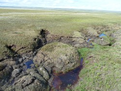
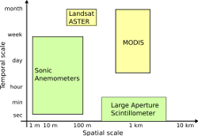
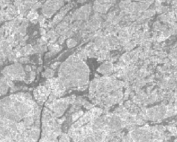
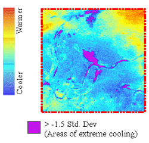
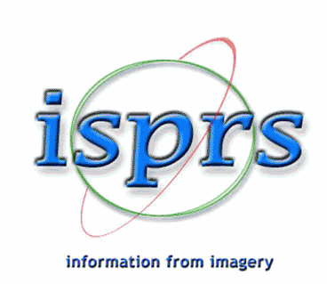
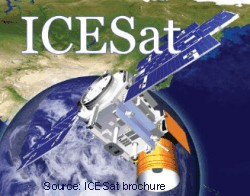
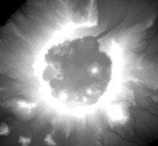
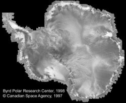

 This research project is a collaborative, interdisciplinary effort to study the responses of Arctic landscapes to permafrost degradation known as thermokarst - landscape features caused by structural failure following the melting of ground ice. As the arctic climate warms, there is increasing report of thermokarst incidence. Responses of geomorphology, stream networks, terrestrial and aquatic ecosyststems, however, are poorly understood.
My contribution to this project is monitoring of thermokarst features with polarimetric SAR imagery. Besides my work on the interface between MapReady and PolSARPro that significantly simplified the processing of the polarimetric data, I added the support of complex polarimetric data from TerraSAR-X and Radarsat-2.
 Evapotranspiration (ET) measures water loss to atmosphere through soil evaporation and plant transpiration, and is a major component of both the land surface hydrologic cycle and the surface energy balance. Our recent proof-of-concept study has shown that multiscale ground-based data can be used to calibrate and adapt ET estimation models, e.g. the Two-Source Energy Balance (TSEB) model. Adapted models can subsequently use input from moderate resolution satellite images (~60 m to 1 km spatial resolution) to generate maps quantifying the magnitude and spatio-temporal variability of ET over large areas.
For this project I am mentoring a graduate student helping him in SAR data interpretation and integration for improved vegetation characterization. I am also developing customized software for ET retrievals in image mode.
 The aim of this continuing study is to map and document the spatial and temporal distribution of recurring lead systems, coastal polynyas and landfast ice in the Beaufort and Chukchi Seas. The study region encompasses the entire northern coast of Alaska and parts of the Russian and Canadian coasts. This includes oil and gas leases sold in 2008 for which sea-ice information is lacking. The region and its sea ice cover are also of importance to protected marine mammals and birds. Dramatic reductions in Arctic summer sea ice extent since 2005 lend urgency to the need for improved knowledge and understanding of the physical sea ice environment in this region of the Arctic.
For the first part of this project I carried out the geocoding of the SAR imagery. In the second part of the project, I also generated the SAR mosaics and the gradient images from which the sea ice edge is delineated.
 Earthquake induced liquefaction events have caused extensive damage around the world. The earthquakes in Bhuj (India), Haiti, New Zealand and Baja California (Mexico) all show widespread liquefaction. We are using multi-spectral and multi-temporal images to map changes in temperature, soil moisture and texture associated with liquefaction areas. Changes in pre- and post-Landsat TM tasseled cap transform wetness images have proven to be very useful in delineating liquefaction areas.
I was the chair of the ISPRS working group VII/2 "Information extraction from SAR data" (2004 to 2008). This activity allowed me to actively promote the use of SAR data and to contribute to the resources available to interact (read, process, manipulate) with this type of remote sensing data that is often conceived as difficult and not intuitive to work with.
Apart from software tools that I develop at ASF, my prime interest was in contributing to other training material, e.g. in form of case studies.
The working group then changed its focus to "DEM Generation and Surface Deformation Monitoring from SAR Data" (2008 to 2012). During that time I served as co-chair.
 In January 2003 the Geoscience Laser Altimeter System (GLAS) was launched onboard the Ice, Cloud and land Elevation Satellite (ICESat). The focus of the project was to evaluate the utility of GLAS data as a vertical reference for topographic mapping on the Arctic Coastal Plain of Alaska, and to assess the feasibility of using tundra lakes for DEM control. We used Star3i InSAR DEMs as well as GPS measurements to compare with the laser altimeter data. The results of this study are useful for our efforts in producing InSAR DEMs derived from ERS tandem data for large parts of the State of Alaska.
My involvement in the project as a Co-PI was in the quality assessment of the data.
The RGPS is designed to generate products that provide estimates of sea ice motion, deformation and sea ice thickness. The system uses Radarsat-1 ScanSAR Wide B (SWB) imagery acquired over the last six years over the entire Arctic Ocean. At the beginning of each winter season a regular grid with a default spacing of 10 km is initialized that defines the freeze up ice condition. With changing ice condition this regular grid distorts in shape and location. The distorted Langrangian grid is stored as an RGPS data product that reflects the ice condition at a particular time.
In worked on alternatives to make this valuable data set more accessible for users. These are now available on ASF's website.
 The primary purpose of the Alaska DEM project was to evaluate results of using multiple mapping techniques on remote sensing data acquired at different resolutions to generate topographic maps at various scales for selected portions of the state of Alaska. The objective was to provide the state agencies with guidelines that enable them to determine the scale, accuracy and costs needed for various state mapping tasks, and to prepare a strategy to complete the operational mapping of the entire state of Alaska. We used data sets from the ERS tandem mission and SRTM (regional scale) and AIRSAR data (local scale) and compared the results from the various sources in terms of scale, accuracy and costs considering the terrain type. We took differential GPS measurements as ground controls.
My contribution to this project was the design and implementation of the production system. The production system is essentially a driver program that runs the entire interferometric processing chain for ERS tandem mission data from a configuration file. It includes some measures to interrupt the processing if the intermediate products is of inferior quality. It reports processing errors in the processing log file. This helps to troubleshoot and streamline the processing chain. Results of this work were presented at IGARSS in 2002:
 The Radarsat-1 Antarctic Mapping Project (RAMP) was a collaboration between NASA and the Canadian Space Agency to map Antarctica using SAR. The MAMM was a continuity mission of RAMP and occurred during the fall of 2000. The acquisition strategy concentrated on collecting three cycles of highest-resolution Radarsat-1 data of Antarctica's fast glaciers for change detection, feature tracking estimates of surface velocity, and interferometric analysis of velocity and coherence over the entire viewable region, which extends north of 80.1°S latitude.
As part of our support of the science team I helped in evaluating the quality of data in general and checking the data sets acquired at the McMurdo groundstation in particular. I carried out initial testing of data in terms of its suitability of SAR interferometric processing. This project helped us to set up the SAR interferometric processing of Radarsat data. The data sets of this mission include some of the most spectacular looking radar images I have ever seen.